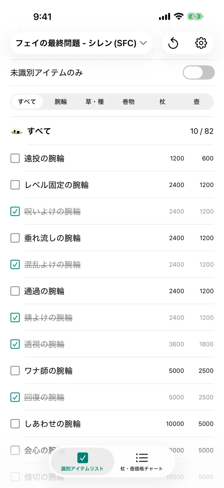
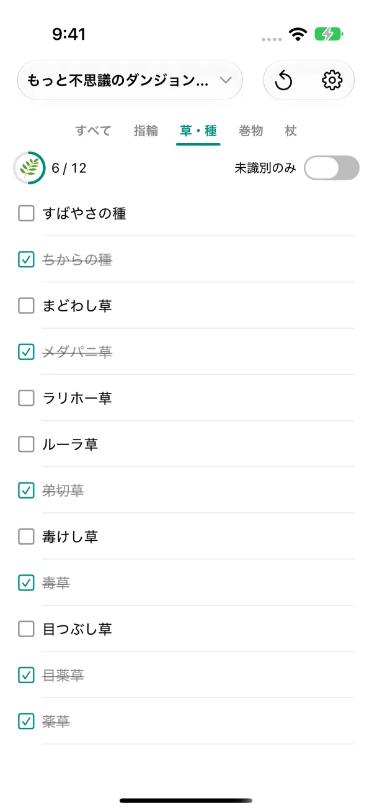
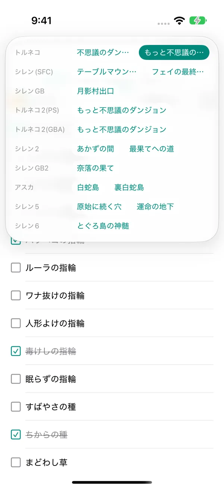

識別のアプリ
不思議のダンジョンのアイテム識別をサポート
「風来のシレン」や「トルネコの大冒険」の “もっと不思議のダンジョン” を攻略するためのアプリです。識別したアイテムをチェックして、未識別のアイテムをひと目で絞り込めます。杖・壺の価格チャートや、おまじないの記録にも対応しています。
App Store で見るiPhone・iPad 対応 / 無料



できること
識別したアイテムをチェック
「識別アイテムリスト」で、識別済みのアイテムにチェックを付けて管理できます。「未識別のみ」をオンにすると、まだ識別していないアイテムだけに絞り込めます。
杖・壺は価格から識別
「杖・壺価格チャート」で、お店での買値・売値を回数や容量ごとに一覧できます。値段からどの杖・壺かを見分けるのに使えます。
おまじないも記録
シレン2 とシレンGB2 では、おまじないでもらえるアイテムもチェックできます。
識別率がひと目で分かる
カテゴリごとの識別率をアイコンのまわりのリングで表示します。すべて識別すると王冠が付きます。カテゴリはタブのタップか左右のスワイプで切り替えられます。
ダンジョンの切り替えはワンタップ
画面上部のダンジョン名をタップするだけで、作品・ダンジョンを切り替えられます。チェックの状態はダンジョンごとに保存されます。
iPhone と iPad で同期
チェックした内容は iCloud を通じて、同じ Apple Account の iPhone・iPad の間で同期されます。データが開発者のサーバーに送られることはありません。
対応作品・ダンジョン
- トルネコの大冒険
- 不思議のダンジョン / もっと不思議のダンジョン
- 風来のシレン（SFC）
- テーブルマウンテン / フェイの最終問題
- 風来のシレンGB 月影村の怪物
- 月影村出口
- トルネコの大冒険2（PS）
- もっと不思議のダンジョン
- トルネコの大冒険2（GBA）
- もっと不思議のダンジョン
- 風来のシレン2 鬼襲来!シレン城!
- あかずの間 / 最果てへの道
- 風来のシレンGB2 砂漠の魔城
- 奈落の果て
- 風来のシレン外伝 女剣士アスカ見参!
- 白蛇島 / 裏白蛇島
- 風来のシレン5 フォーチュンタワーと運命のダイス
- 原始に続く穴 / 運命の地下
- 風来のシレン6 とぐろ島探検録
- とぐろ島の神髄
対応作品・ダンジョンは今後も追加予定です。
未識別のアイテムを、ひと目で。
App Store で見る